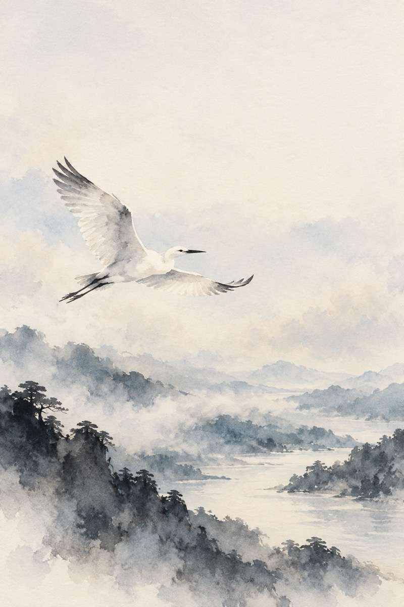
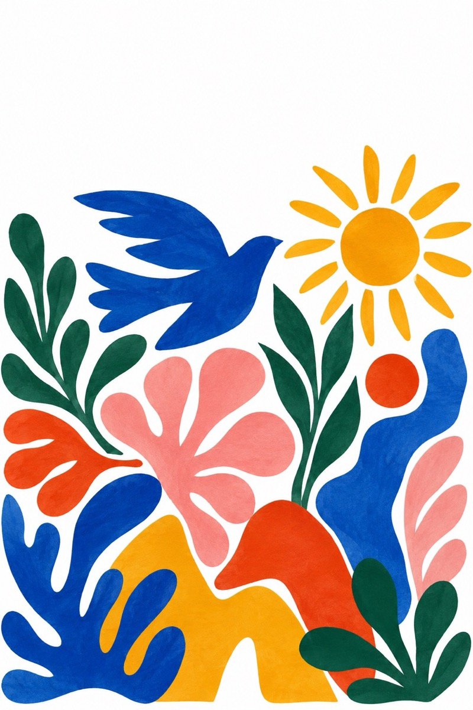
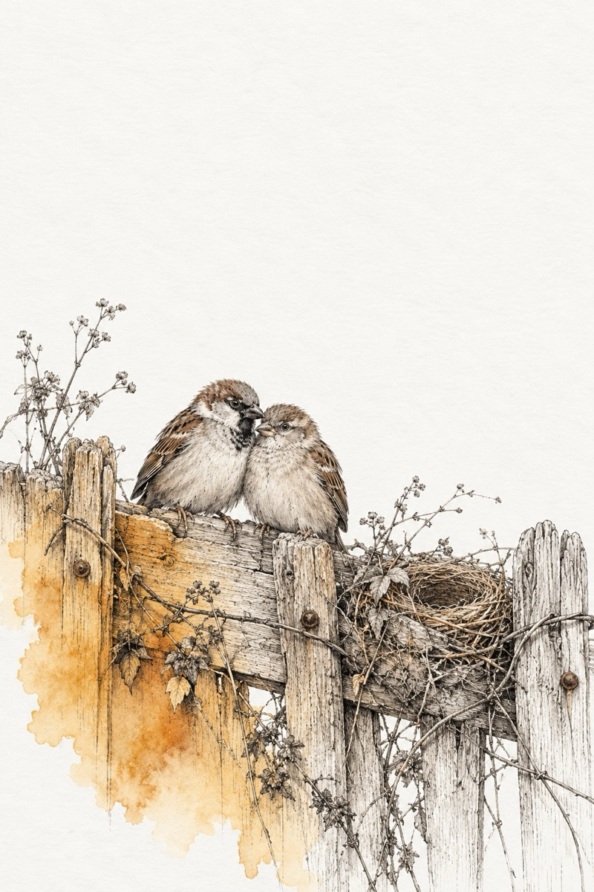
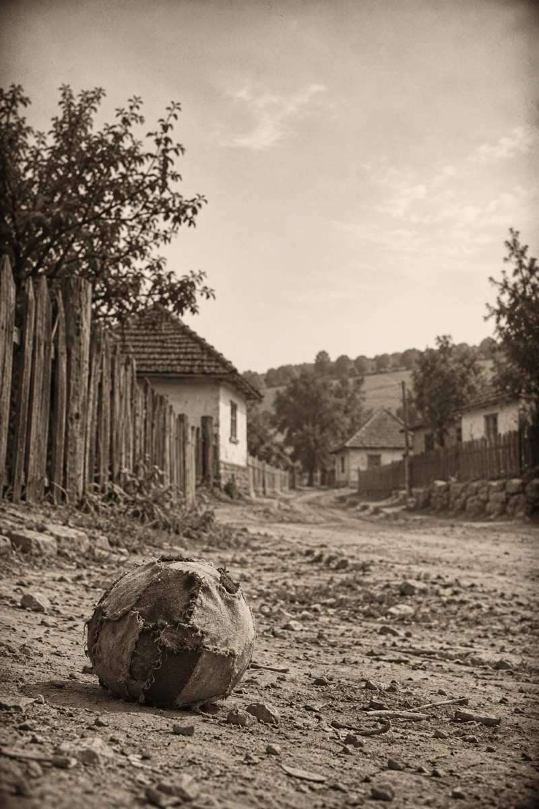
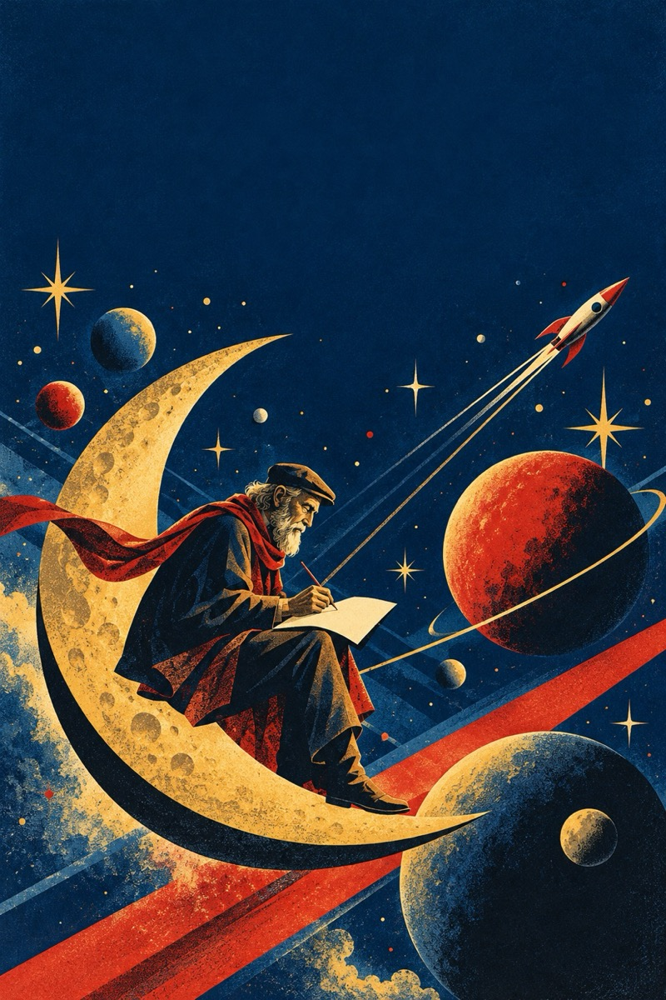
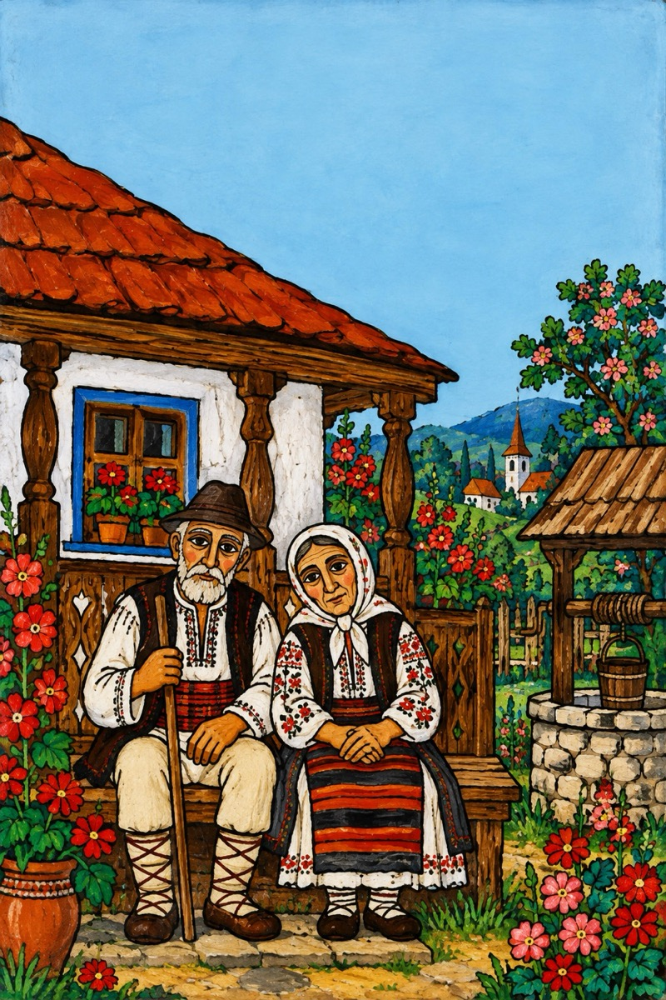
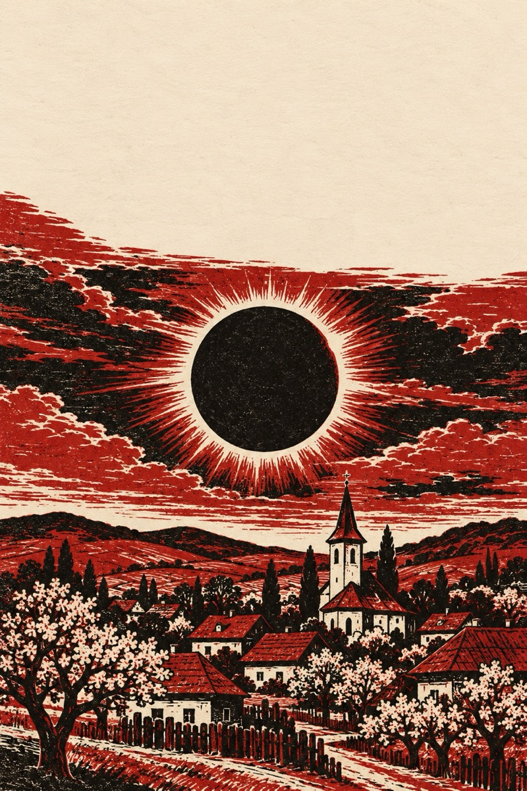
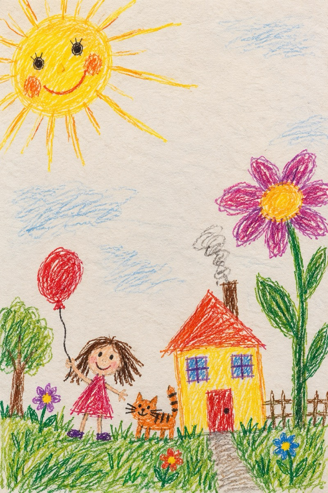
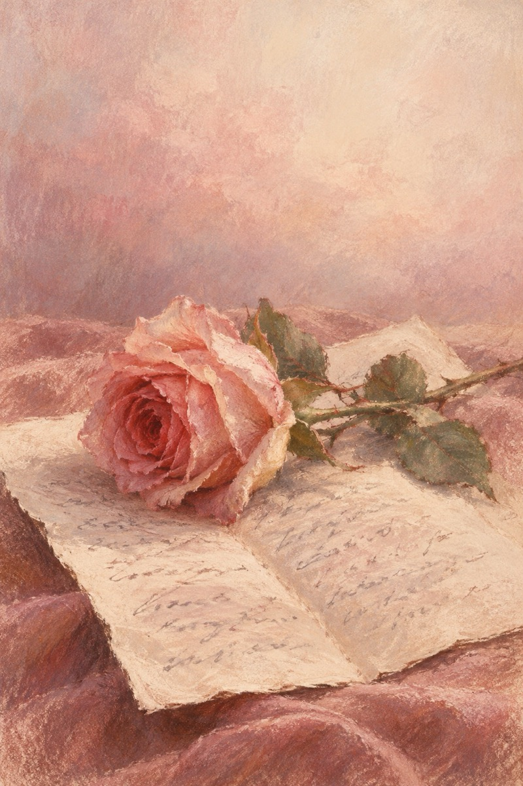
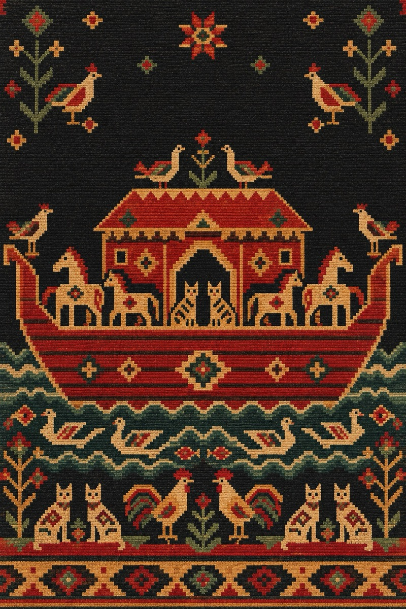

Cărțile

Pe aripile poezieiVasile Groza„De copilărie nu vă-ndepărtați”194 de poezii
Abecedar fermecatVasile GrozaPrivește-mă în ochi (2017)„Dincolo de fereastră”255 de poezii
Țoi VrăbioiVasile GrozaPrivește-mă în ochi (2018)„Așa a fost rânduiala”255 de poezii
Minge de cârpăVasile GrozaPrivește-mă în ochi (2019)„Seara Sfântului Vasile”242 de poezii
Serialul cosmicVasile GrozaPrivește-mă în ochi (2020)„Doi ,,copii” fericiți, nevinovați.”236 de poezii
Văsălie și MărieVasile GrozaD-ale lui Văsălie și Mărie„No bătute-ar să te bată”44 de poezii
Anul eclipseiVasile GrozaPrivește-mă în ochi (2015)„Dacă ai prins trenul în gară”271 de poezii- Pisicuții pianiștiVasile GrozaPrivește-mă în ochi (2016)„Aho, aho, copii și frați”317 poezii

CopileVasile GrozaCopile sau Cartea copiilor„Cartea-i adevărul ce te cheamă”63 de poezii
Poezii de sufletVasile Groza„Dac-ai știi cât de mult te iubesc”5 poezii- Oare cine-i?Vasile GrozaPoezii și ghicitori„Aș vrea să fiu o pasăre măiastră”74 de poezii

Arca lui NoeVasile GrozaPoezii cu animale„Mânăstire-ntr-un picior”12 poezii